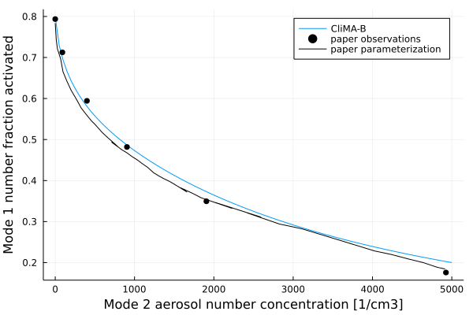

Aerosol Activation
The AerosolActivation.jl module contains parameterization of activation of aerosol particles into cloud droplets via deposition of water vapor. Accompanying it, is the AerosolDistribution.jl module, which contains information about the aerosol size distribution and chemical properties. The parameterization computes the total activated number and mass from a given aerosol size distribution. It is based on Köhler theory and assumes equilibrium thermodynamics. The modules are an implementation of the parameterization from Hayder Abdul-Razzak, Steven J. Ghan, Carlos Rivera-Carpio (1998) and Hayder Abdul-Razzak, Steven J. Ghan (2000). The aerosol chemical composition can be expressed using the B parameter from Hayder Abdul-Razzak, Steven J. Ghan (2000) or the kappa parameter from M. D. Petters, S. M. Kreidenweis (2007).
Assumed aerosol size distribution and properties
Aerosol particles are assumed to follow a multi-mode lognormal size distribution. Particles in each mode are assumed to be internally mixed. The following table lists the parameters defining the aerosol physical and chemical properties using the B parameter. The $r_{dry}$, $\sigma$, and $N_{tot}$ are given for each mode. Other parameters are defined for each component in each mode.
| variable name | definition | units |
|---|---|---|
| $r_{dry}$ | geometric mean dry radius | $m$ |
| $\sigma$ | geometric standard deviation | $-$ |
| $N_{tot}$ | total number concentration | $m^{-3}$ |
| $r$ | component mass mixing ratio | $-$ |
| $\epsilon$ | mass fraction of water soluble material | $-$ |
| $\phi$ | osmotic coefficient | $-$ |
| $M_a$ | molar mass | $kg \, mol^{-1}$ |
| $\nu$ | number of ions the salt dissociates into in water | $-$ |
| $\rho_a$ | aerosol density | $kg \, m^{-3}$ |
When using the kappa formulation, one has to specify fewer parameters.
| variable name | definition | units |
|---|---|---|
| $r_{dry}$ | geometric mean dry radius | $m$ |
| $\sigma$ | geometric standard deviation | $-$ |
| $N_{tot}$ | total number concentration | $m^{-3}$ |
| $r_{vol}$ | component volume mixing ratio | $-$ |
| $M_a$ | molar mass | $kg \, mol^{-1}$ |
| $\kappa$ | kappa parameter | $-$ |
The parameterization assumes that the solute is sufficiently soluble so that its concentration does not increase as the droplet grows. The effects of surfactants on surface tension are also not considered.
Mean Hygroscopicity
Hygroscopicity describes the impact of solute on aerosol efficiency in taking up water vapor from the environment (i.e. the Raoult's law). The parametrization accepts two ways of describing it, either using the $B$ parameter or $\kappa$ parameter. The $B$ parameter is defined in eq. (3) in Hayder Abdul-Razzak, Steven J. Ghan (2000):
\[B = \frac{\nu \, \phi \, M_w \, \rho_a}{M_a \, \rho_w}\]
where:
- $\nu, \, \phi, \, M_a, \, \rho_a$ are the aerosol properties defined in the above table,
- $M_w$ is the molar mass of water,
- $\rho_w$ is the density of water.
The mean $B$ parameter for internally mixed mode $i$ made up of $j$ aerosol species is computed according to eq. (4) in Hayder Abdul-Razzak, Steven J. Ghan (2000):
\[\begin{equation} \bar{B_i} = \frac{M_w \sum_{j = 1}^{J} \frac{r_{ij} \, \nu_{ij} \, \phi_{ij} \, \epsilon_{ij}}{M_{aij}}}{\rho_w \sum_{j = 1}^{J} \frac{r_{ij}}{\rho_{aij}}} \end{equation}\]
where:
- $i = 1, 2, ..., I$ iterates over aerosol size distribution modes,
- $j = 1, 2, ..., J$ iterates over aerosol components within a given mode,
- $r_{ij}$ is the mass ratio of component $j$ in mode $i$.
The $\kappa$ parameter values for different chemical compounds are provided in Table 1 in M. D. Petters, S. M. Kreidenweis (2007). The mean $\kappa$ parameter for internally mixed mode $i$ made up of $j$ aerosol species is computed as a volume weighted average:
\[\kappa_i = \sum_{j=1}^{J} r_{ij,\, vol} \kappa_{ij}\]
where:
- $r_{ij, \, vol}$ is the volume ratio of component $j$ in mode $i$.
Critical supersaturation
Supersaturation $S$ is the ratio of water vapor pressure to saturation vapor pressure. Köhler theory defines $S$ at which the growing aerosol particle is in equilibrium with the environment over a range of its sizes. It takes into account the curvature effects and the solute effects. Aerosol activation occurs when the threshold supersaturation, named critical supersaturation $S_c$, is reached. After reaching $S_c$, even when $S$ decreases, as long as the conditions remain saturated, the particle will continue to grow. The critical supersaturation is defined by the maximum of the Köhler curve. For example, eq.(9) in Hayder Abdul-Razzak, Steven J. Ghan (2000) defines the the critical supersaturation for a particle with dry radius equal to the mean mode radius:
\[\begin{equation} S_{ci} = \frac{2}{\sqrt{\bar{H_{i}}}} \bigg( \frac{A}{3 \, r_{dry, \, i}} \bigg)^{3/2} \label{eq:Scriti} \end{equation}\]
where:
- $H_i$ is either the $B_i$ or the $\kappa_i$ hygroscopicity parameter
- $A$ is the coefficient describing the curvature effects (i.e. Kelvin effect),
- $r_{dry \, i}$ is the mean dry radius for mode $i$.
Coefficient $A$ is defined as in equation (5) in Hayder Abdul-Razzak, Steven J. Ghan, Carlos Rivera-Carpio (1998).
\[\begin{equation} A = \frac{2 \tau M_w}{\rho_w R T} \end{equation}\]
where:
- $\tau$ is the surface tension of water,
- $R$ is the universal gas constant,
- $T$ is the temperature.
Maximum Supersaturation
Maximum supersaturation reached by the system $S_{max}$ governs what aerosol sizes are activated and what aren't. We estimate $S_{max}$ by considering a parcel of air raising adiabatically with a constant velocity, see for example R.R. Rogers (1975). The time rate of change of $S$ is given by eq (10) in R.R. Rogers (1975)
\[\begin{equation} \frac{dS}{dt} = \alpha w - \gamma \frac{d\chi}{dt} \label{eq:Sevolution} \end{equation}\]
where:
- $w$ is the vertical velocity,
- $d\chi / dt$ is the water condensation rate during aerosol activation and growth,
- $\alpha$ and $\gamma$ are coefficients that do not depend on aerosol properties.
The parameters $\alpha$ and $\gamma$ are defined by eq. (11) and (12) in Hayder Abdul-Razzak, Steven J. Ghan, Carlos Rivera-Carpio (1998) . Here, they are implemented following the R.R. Rogers (1975) eq. (10):
\[\begin{equation} \alpha = \frac{L_v \, g \, \epsilon}{R_m \, c_{pm} \, T^2} - \frac{g}{R_m \, T} \end{equation}\]
\[\begin{equation} \gamma = \frac{R_m T}{\epsilon \, p_{vap}^{sat}} + \frac{\epsilon \, L_v^2}{c_{pm} \, T \, p} \end{equation}\]
where:
- $L_v$ is the latent heat of vaporization,
- $g$ is gravitational acceleration,
- $\epsilon$ is the ratio of water molar mass to dry air molar mass,
- $R_m$ is the gas constant of air (dry air and moisture)
- $c_{pm}$ is the specific heat of air (dry air and moisture),
- $p_{vap}^{sat}$ is the saturation vapor pressure,
- $p$ is the total air pressure.
The maximum supersaturation is estimated from eq. (\ref{eq:Sevolution}) assuming steady a state solution $dS/dt = 0$. Hayder Abdul-Razzak, Steven J. Ghan, Carlos Rivera-Carpio (1998) and Hayder Abdul-Razzak, Steven J. Ghan (2000) show how to derive an approximate solution for $S_{max}$, since analytical solution is in general not possible. They consider approximate solutions for very small and very large critical supersaturation values relative to maximum supersaturation, and combine them into a final expression for $S_{max}$. The final formula is presented in eq (6) in Hayder Abdul-Razzak, Steven J. Ghan (2000)
\[\begin{equation} S_{max} = \frac{1}{\Bigg\{ {\sum_{i=1}^{I}\frac{1}{S_{ci}^{2}}\bigg[f_i \Big( \frac{\zeta}{\eta_{i}} \Big)^{\frac{3}{2}} + g_{i} \Big(\frac{S_{ci}^{2}}{\eta_{i} + 3\zeta} \Big)^{\frac{3}{4}}\bigg]} \Bigg\}^{\frac{1}{2}}} \end{equation}\]
where
- $S_{ci}$ is the critical supersaturation for mode $i$ defined in eq. (\ref{eq:Scriti}),
- $f_i$, $g_i$, $\zeta$, $\eta_i$ are the coefficients defined in eqs. (7, 8, 10 and 11) in Hayder Abdul-Razzak, Steven J. Ghan (2000).
\[\begin{equation} f_i = 0.5 \, \mathrm{exp} (2.5 \, \mathrm{ln}^{2} \sigma_{i}) \end{equation}\]
\[\begin{equation} g_i = 1 + 0.25 \, \mathrm{ln} \sigma_i \end{equation}\]
\[\begin{equation} \zeta = \frac{2A}{3} \bigg(\frac{\alpha w}{G}\bigg)^{\frac{1}{2}} \end{equation}\]
\[\begin{equation} \eta_i = \bigg(\frac{\alpha w}{G}\bigg)^{\frac{3}{2}} \frac{1}{2 \pi \rho_w \gamma N_i} \end{equation}\]
where:
- $G(T) = \frac{1}{\rho_w} \, \left(\frac{L_v}{KT} \left(\frac{L_v}{R_v T} - 1 \right) + \frac{R_v T}{p_{vap}^{sat} D} \right)^{-1}$ combines the effects of thermal conductivity $K$ and water diffusivity $D$.
Number and mass of activated particles
The total number $N_{act}$ and mass $M_{act}$ of activated aerosol particles can be computed by integrating their size distribution starting from the smallest activated size. Following the derivations of Hayder Abdul-Razzak, Steven J. Ghan, Carlos Rivera-Carpio (1998) and Hayder Abdul-Razzak, Steven J. Ghan (2000) this can be expressed in terms of critical supersaturations of each size distribution mode $S_{ci}$ and the maximum supersaturation $S_{max}$.
\[\begin{equation} N_{act} = \sum_{i = 1}^{I} N_{i}\frac{1}{2}\bigg[1 - \mathrm{erf}(u_{i})\bigg] \end{equation}\]
\[\begin{equation} M_{act} = \sum_{i = 1}^{I} M_{i}\frac{1}{2}\bigg[1 - \mathrm{erf}\bigg(u_{i} - \frac{3 \sqrt2}{2} ln(\sigma_i)\bigg)\bigg] \end{equation}\]
where:
- $M_i$ is the average molar mass of aerosol particles in mode $i$,
- $u_i$ is given in equation (15) in Hayder Abdul-Razzak, Steven J. Ghan (2000).
\[\begin{equation} u_i = \frac{2}{3\sqrt2 \, ln(\sigma_i)} ln\bigg( \frac{S_{ci}}{S_{max}} \bigg) \end{equation}\]
where:
- $S_{ci}$ is the mode critical supersaturation,
- $S_{max}$ is the maximum supersaturation.
Example figures
import Plots
import CloudMicrophysics
import CLIMAParameters
import Thermodynamics
const PL = Plots
const AM = CloudMicrophysics.AerosolModel
const AA = CloudMicrophysics.AerosolActivation
const CMP = CloudMicrophysics.Parameters
const CP = CLIMAParameters
const TD = Thermodynamics
include(joinpath(pkgdir(CloudMicrophysics), "test", "create_parameters.jl"))
FT = Float64
toml_dict = CP.create_toml_dict(FT; dict_type = "alias")
const param_set = cloud_microphysics_parameters(toml_dict)
thermo_params = CMP.thermodynamics_params(param_set)
# Atmospheric conditions
T = 294.0 # air temperature
p = 1000.0 *1e2 # air pressure
w = 0.5 # vertical velocity
# We need the phase partition here only so that we can compute the
# moist R_m and cp_m in aerosol activation module.
# We are assuming here saturated conditions and no liquid water or ice.
# This is consistent with the assumptions of the aerosol activation scheme.
p_vs = TD.saturation_vapor_pressure(thermo_params, T, TD.Liquid())
q_vs = 1 / (1 - CMP.molmass_ratio(param_set) * (p_vs - p) / p_vs)
q = TD.PhasePartition(q_vs, 0.0, 0.0)
# Abdul-Razzak and Ghan 2000 Figure 1 mode 1
# https://doi.org/10.1029/1999JD901161
r_dry = 0.05 * 1e-6 # um
stdev = 2.0 # -
N_1 = 100.0 * 1e6 # 1/m3
# Sulfate - universal parameters
M_sulfate = 0.132
ρ_sulfate = 1770.0
ϕ_sulfate = 1.0
ν_sulfate = 3.0
ϵ_sulfate = 1.0
n_components_1 = 1
mass_fractions_1 = (1.0,)
paper_mode_1_B = AM.Mode_B(
r_dry,
stdev,
N_1,
mass_fractions_1,
(ϵ_sulfate,),
(ϕ_sulfate,),
(M_sulfate,),
(ν_sulfate,),
(ρ_sulfate,),
n_components_1,
)
N_2_range = range(0, stop=5000 * 1e6, length=100)
N_act_frac_B = Vector{Float64}(undef, 100)
it = 1
for N_2 in N_2_range
n_components_2 = 1
mass_fractions_2 = (1.0,)
paper_mode_2_B = AM.Mode_B(
r_dry,
stdev,
N_2,
mass_fractions_2,
(ϵ_sulfate,),
(ϕ_sulfate,),
(M_sulfate,),
(ν_sulfate,),
(ρ_sulfate,),
n_components_2,
)
AD_B = AM.AerosolDistribution((paper_mode_1_B, paper_mode_2_B))
N_act_frac_B[it] = AA.N_activated_per_mode(param_set, AD_B, T, p, w, q)[1] / N_1
global it += 1
end
# data read from Fig 1 in Abdul-Razzak and Ghan 2000
# using https://automeris.io/WebPlotDigitizer/
include("ARGdata.jl")
PL.plot(N_2_range * 1e-6, N_act_frac_B, label="CliMA-B", xlabel="Mode 2 aerosol number concentration [1/cm3]", ylabel="Mode 1 number fraction activated")
PL.scatter!(Fig1_x_obs, Fig1_y_obs, markercolor = :black, label="paper observations")
PL.plot!(Fig1_x_param, Fig1_y_param, linecolor = :black, label="paper parameterization")
PL.savefig("Abdul-Razzak_and_Ghan_fig_1.svg")